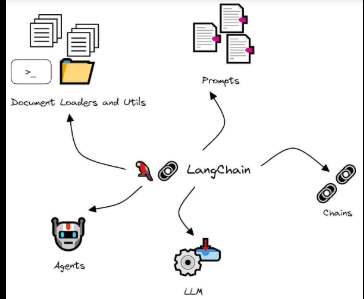
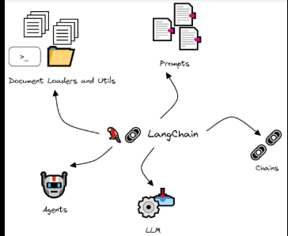

Cold Email Generator Tool
this tool simplifies job-based outreach using Groq, LangChain, and Streamlit. The goal is to automate and personalize client engagement by aligning job postings with relevant services.
Why Use This Tool?
Imagine a company posts a job, such as a Senior Backend Developer. Traditional hiring processes can be long and costly.
HelferTech's solution provides on-demand engineering teams to tackle such needs efficiently.
How It Works:
- Input the Job URL: Provide the careers page link with job listings.
- Data Extraction: The tool extracts key job details such as roles, skills, and descriptions.
- Portfolio Matching: It connects relevant case studies stored in the Vector Database.
- Personalized Email Generation: Generates cold emails tailored to the job posting, highlighting HelferTech's services.
Architecture Overview
- Careers Page: Source of job data.
- LLM Processing: Extracts structured data like required skills and descriptions.
- Vector Database: Manages portfolio matching.
- Streamlit Interface: User-friendly front-end for outreach generation.
Setup Instructions:
Follow these steps to set up the tool:
- API Key Setup: Obtain your Groq API key and add it to the
.envfile: - Install Dependencies:
- Run the Application:
GROQ_API_KEY=your_api_key_here
pip install -r requirements.txt
streamlit run app/main.py
Benefits:
- Automates outreach for sales teams.
- Generates highly targeted and personalized emails.
- Leverages portfolio projects to highlight expertise.
- Increases conversion rates with precise messaging.
Example Scenario:
If a company posts a job for a Cloud Solutions Architect, the tool analyzes the description, matches it with HelferTech's successful cloud solutions, and generates a tailored email to position HelferTech as the perfect partner.
HelferTech: Simplifying job-based client engagement! 🚀
Images from the Project

 
